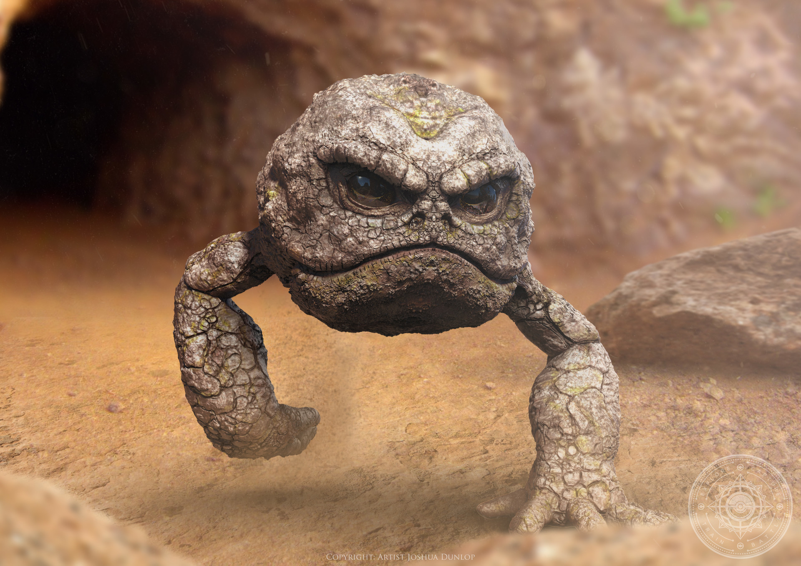

Le Zoo - Pokemon type Roche.
Racaillou c'est pas juste un caillou bien dur, c'est aussi la bagarre la vraie, un vrai amateur de castagne. Des marrons il envoie a tour de bras, dans le jargon on l'appelle la salade de phalanges. Avec ses deux gros silex en guise de poings je l'ai déjà vu péter la geule d'un gros caîd du nom de Mamadou. Ce naze avait sous estimé la puissance de ce caillou, il a même dit " les mec hak lo j'vais investir dans la pierre" avant de bouffer ses godasses
J'évolue au niveau 25 en un gros tas de pierre et à ce niveau la je hagar fahad encore plus que Djenna, Ecrasement de tête, baleyette autant te dire qu'il reviendra plus en cours avec sa pochette ce plouk.